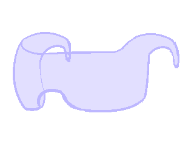
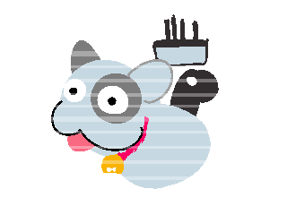

The glasses in Dennoucoil are an interesting device, allowing the characters to see and interact with the digital world, a wild west for them as their society doesn't peer in beyond automated maintenance on bugs, bugs that include the easily hacked devices at the risk of being busted and having to pay the factory-reset fine, not unlike how one may imagine the future with the newly released iPhone having only been on the market for a couple of years and iterating on itself.
But it's not simply a metaphor for the iPhone and the battle between end-user and authority, as they are put into a world, where they react to the digital, both the good and the bad to have visuals, often being fooled by the visuals others whether turning a room into something it is not, or repairing a wall visually where one doesn't exist in the physical space anymore, allowing the kids to phase through into a hideout.
The characters are also able to throw up digital walls that other characters in fact have to respect, though it's not elaborated as to why they have to respect it, it could be anything from the glasses themselves suffering factory reset should they try, to becoming so immersed in the digital world that it starts affecting them back as they struggle to penetrate through what they now are aware of.
The digital is hence highlighted as a tool that allows one to extend oneself and reach opportunities one otherwise couldn't, not a separate world, but an extension of our own, while also being a tool that has different sights and perspectives than other tools, still allowing one to miss other details, even ones spotted by not engaging with the tool at all.

The glasses they wear serving as a computer with apps, had digital creatures inside, most of them dedicated as as pets, outdated ones eventually bugging out and becoming mass glitches in old netscape that one could still seek out if one tried.
While the anime as a whole ponders on the digital having effects on the analog, episode 13 is dedicated to the invisibility of animals in our city-planning, utilizing the glasses to indicate only those with the eyes of our most modern tools being able to see the harm that we do when we design our city a certain way, a prime example being this sillouette dinosaur species that cannot walk on non-dark areas, and so as the city creates buildings with less and less shadows that persist throughout the day, the species slowly gets wiped out.
The anime also utilizes the abstraction of living things into the digital to better
talk about death without the risk of being held back by powers that find it
inappropriate to talk about (the Astroboy method).